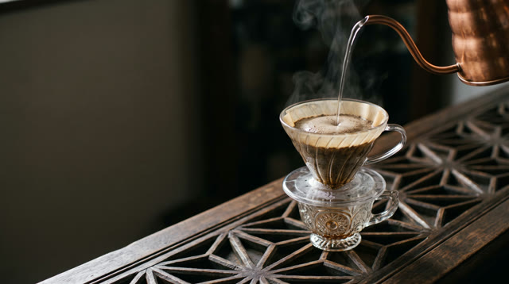
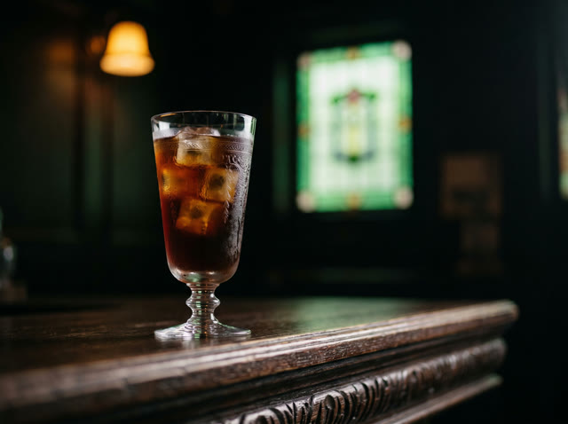
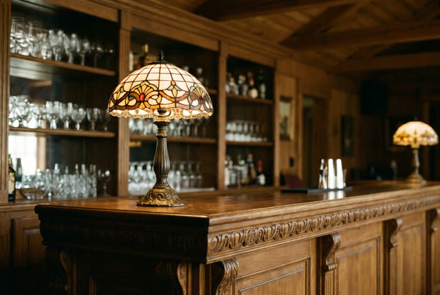
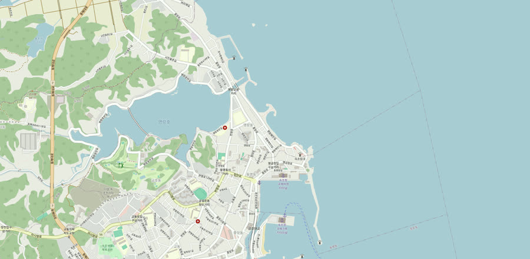

핸드드립
그날의 싱글 오리진을 손으로 내립니다. 가장 크로프트다운 한 잔.
croft coffee · sokcho
한 방울, 또 한 방울. 서두르지 않습니다.
옛 쌀가게였던 집에서, 하나뿐인 골동품 잔에 담습니다.
여행과 여행 사이, 조용한 쉼표.
slowly, by hand
크로프트는 커피만 합니다. 시그니처 메뉴도, 디카페인도, 서두름도 없습니다. 등대해변 골목의 옛 쌀가게에서, 그날의 원두를 손으로 내려 하나뿐인 골동품 잔에 담습니다. 자리는 많지 않고, 시간은 천천히 갑니다. 그게 전부이고, 그거면 충분합니다.
three, and the beans

그날의 싱글 오리진을 손으로 내립니다. 가장 크로프트다운 한 잔.
옛날식 그대로, 진하고 단정하게.

차갑게, 그러나 여전히 천천히.
매장에서 직접 로스팅한 원두를 구입하실 수 있습니다.
a room where time stopped

스테인드글라스 조명, 나무 격자창, 주인장이 하나씩 모은 골동품 잔. 1950년대에 지어진 집의 결을 그대로 두었습니다. 조용히 머물다 가시라고, 노키즈존으로 운영합니다.
honest notes
follow along
속초의 하루와 오늘의 원두를 올립니다. @croft_coffee
find your way
